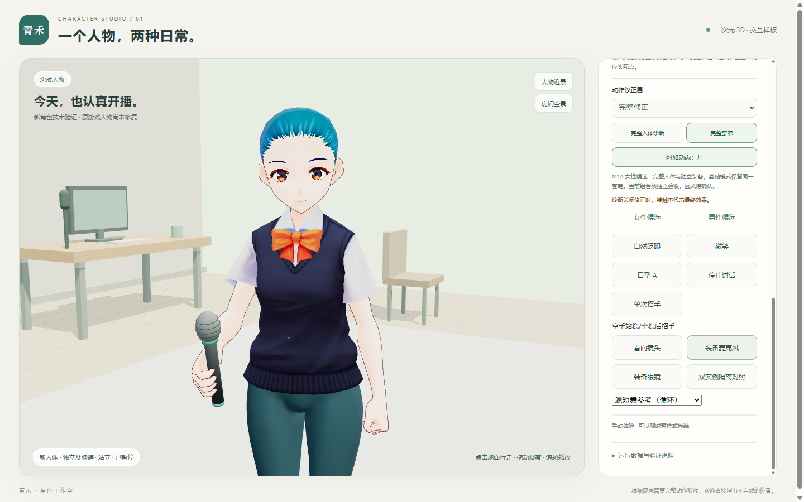
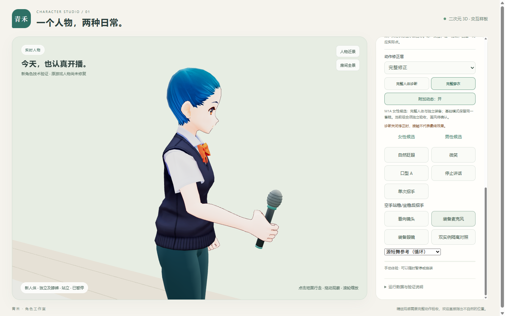
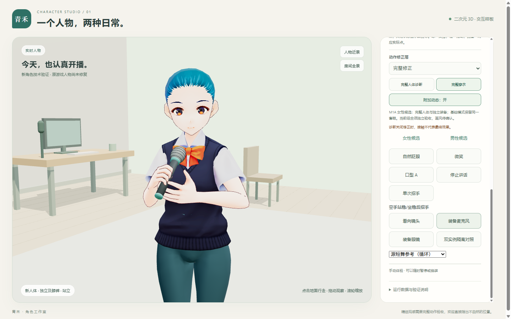
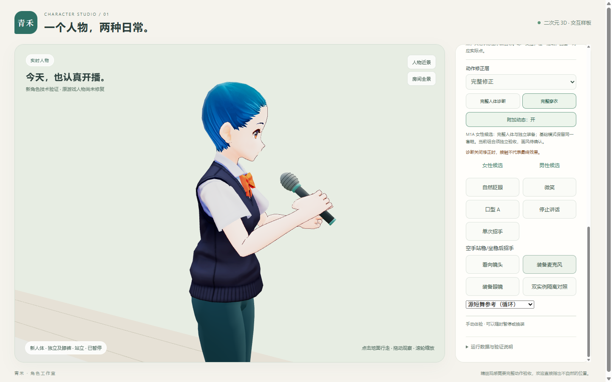
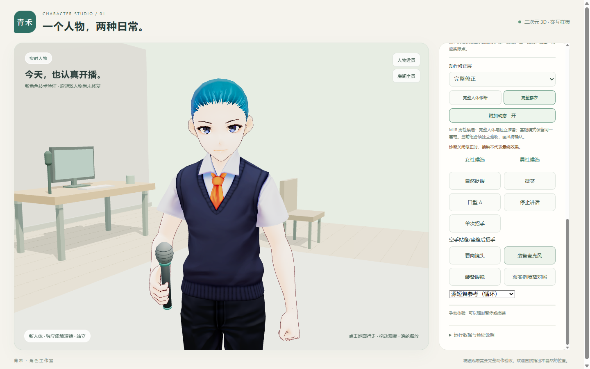
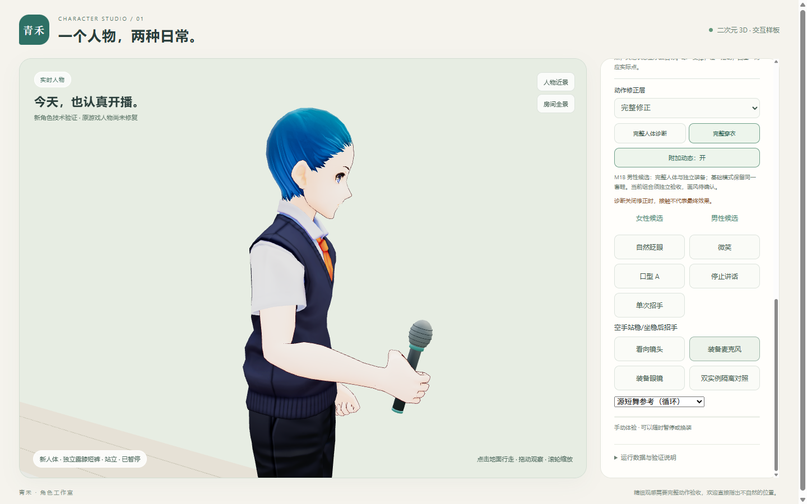
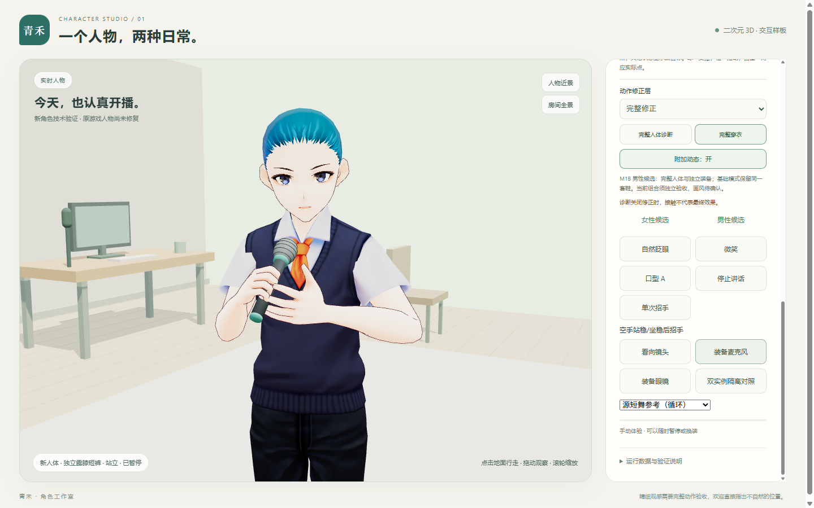
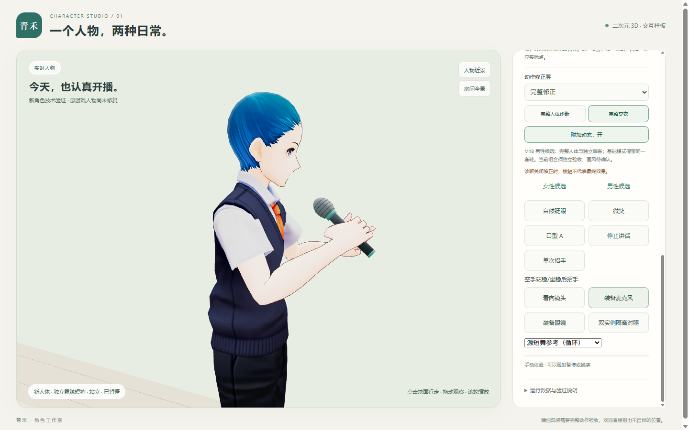

固定152b17a0c6e9，男女各一条正常1×未剪辑房间录像。装备→讲话→起跑→180°改目标→停下再讲→卸麦。新转向观感仍待判断；用户已接受的f7持麦录像不自动等于本整链已接受。
原生按钮和真实任务；旧目标因重选正常取消，新目标完成，真实到点误差约17.5mm。相机全程固定，未将近图混入原片。
链后诊断重放近图（非room原片裁剪；按钮文本不作为此API重放状态证据）




链后诊断重放近图（非room原片裁剪；按钮文本不作为此API重放状态证据）



